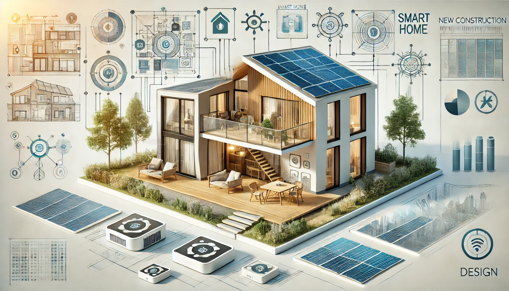

Latest Trends in New Construction Design
New construction design is constantly evolving, with new trends emerging every year. Here are some of the latest trends in new construction design:
- Open Floor Plans: Creating spacious, flexible living areas by minimizing walls and incorporating open spaces.
- Sustainable Design: Integrating eco-friendly materials and energy-efficient systems into new construction projects.
- Smart Home Technology: Including advanced technology such as automated lighting, security systems, and climate control in new homes.
- Outdoor Living Spaces: Designing homes with outdoor living areas such as patios, decks, and gardens to enhance the living experience.
- Minimalist Aesthetics: Emphasizing clean lines, simple forms, and a neutral color palette in new construction design.